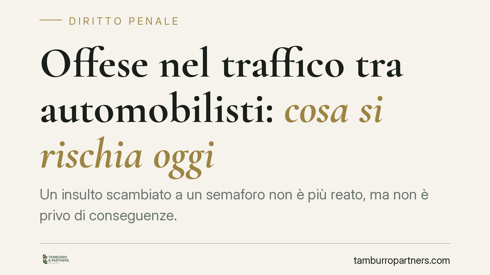

Offese nel traffico tra automobilisti: cosa si rischia oggi
Un insulto scambiato a un semaforo non è più reato, ma non è privo di conseguenze. Dal 2016 l'ingiuria è depenalizzata: chi offende rischia una sanzione pecuniaria civile fino a 8.000 euro, oltre al risarcimento del danno verso la persona offesa. Vediamo cosa prevede la legge e quando l'offesa online diventa invece diffamazione, che resta reato.

Il fatto
Le liti tra automobilisti sono frequenti: un sorpasso azzardato, un clacson insistito, una frenata improvvisa. Ne segue spesso uno scambio di insulti dal finestrino. Fino al 2016 l'ingiuria era un reato (art. 594 del codice penale); oggi non lo è più, ma continua a produrre conseguenze economiche rilevanti.
Inquadramento normativo
Il D.Lgs. 15 gennaio 2016, n. 7 ha abrogato il reato di ingiuria e lo ha trasformato in un illecito civile sottoposto a sanzione pecuniaria. Il meccanismo è a doppio binario: da un lato una sanzione pubblica versata allo Stato (Cassa delle ammende), dall'altro il diritto della persona offesa a ottenere il risarcimento del danno.
L'art. 4 del D.Lgs. 7/2016 individua l'ingiuria come l'offesa recata all'onore o al decoro di una persona presente. La presenza è l'elemento distintivo: se l'offeso non è presente e l'offesa è comunicata a più persone, si può rientrare nella diffamazione (art. 595 c.p.), che è rimasta reato.
La forbice sanzionatoria è articolata. Per l'ingiuria semplice la sanzione pecuniaria civile va da 100 a 8.000 euro. Nelle ipotesi aggravate — offesa consistente nell'attribuzione di un fatto determinato, oppure commessa in presenza di più persone — la sanzione sale da 200 a 12.000 euro (art. 4, comma 1, D.Lgs. 7/2016).
Lo stesso art. 4, comma 2, disciplina l'attenuazione: quando l'offesa è commessa in stato d'ira determinato da un fatto ingiusto altrui (la cosiddetta provocazione) o è reciproca, il giudice può ridurre la sanzione o non applicarla. La valutazione del "fatto ingiusto" è rimessa al giudice, che apprezza il contesto concreto: non ogni scortesia stradale integra una provocazione idonea a escludere la responsabilità.
Implicazioni pratiche
Per l'automobilista che offende, il rischio non è più penale ma resta economico e su due fronti. La sanzione pubblica è irrogata dal giudice civile all'esito della causa promossa dalla persona offesa; il risarcimento del danno è invece dovuto direttamente a quest'ultima e si aggiunge alla sanzione.
Attenzione al mezzo. Un insulto urlato al finestrino resta nell'area dell'ingiuria. Ma se lo stesso episodio viene ripreso e diffuso sui social, con l'identificazione della persona offesa, si può scivolare nella diffamazione, che è ancora reato e comporta procedimento penale. Il confine dipende dalla comunicazione a più persone e dall'assenza dell'offeso nel momento della diffusione.
Per la persona offesa, il termine è dirimente: l'azione di risarcimento per fatto illecito si prescrive in cinque anni (art. 2947 del codice civile), decorrenti dal giorno dell'episodio. Superato questo termine, il diritto al risarcimento non è più esercitabile.
Cosa fare in concreto
- Documenta l'episodio. Annota data, ora e luogo; conserva eventuali registrazioni della dashcam o testimonianze di chi era presente.
- Distingui il canale. Se l'offesa è stata diffusa online o davanti a più persone assenti l'offeso, valuta l'ipotesi di diffamazione (reato), non di semplice ingiuria.
- Rispetta i termini. Chi intende chiedere il risarcimento agisca entro i cinque anni dall'episodio, come previsto dall'art. 2947 c.c.
- Valuta il contesto. Va considerato se l'offesa sia stata reciproca o provocata da un comportamento ingiusto altrui, circostanze che ex art. 4, comma 2, D.Lgs. 7/2016 possono ridurre o escludere la responsabilità.
- Quantifica il danno con criteri concreti. Il risarcimento richiede la prova di un pregiudizio effettivo all'onore o al decoro, non la mera lamentela.
Un punto fermo
La depenalizzazione ha alleggerito il piano penale ma non ha reso l'insulto stradale una condotta libera. Resta un illecito con costi potenzialmente elevati, e il passaggio dal finestrino allo schermo può riportare il fatto sul terreno penale della diffamazione.
---
*Contributo informativo a cura di Tamburro & Partners Avvocati - Avv. Giuseppe Tamburro. Non costituisce parere legale.*
Ogni condominio ha una storia a sé.
Se gestisci un'amministrazione e vuoi un confronto su una specifica questione condominiale, scrivi allo studio. Ti rispondiamo entro un giorno lavorativo.